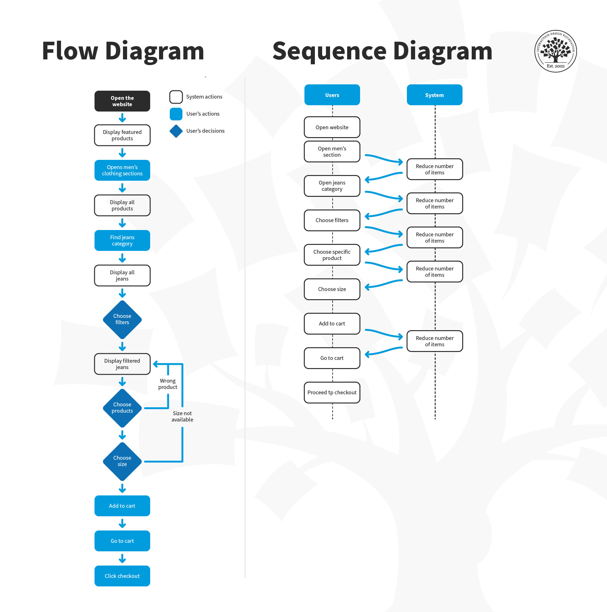
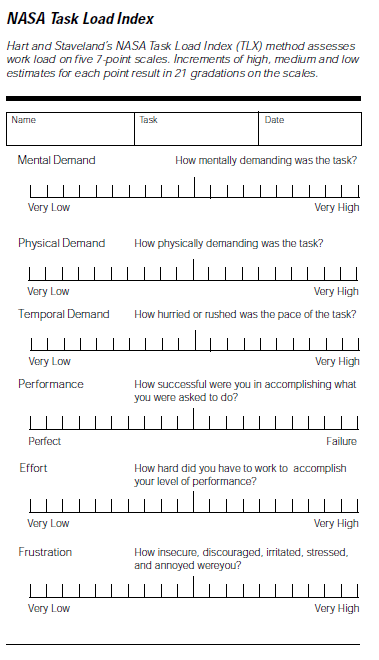
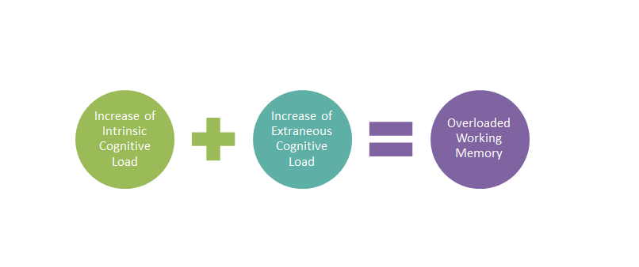
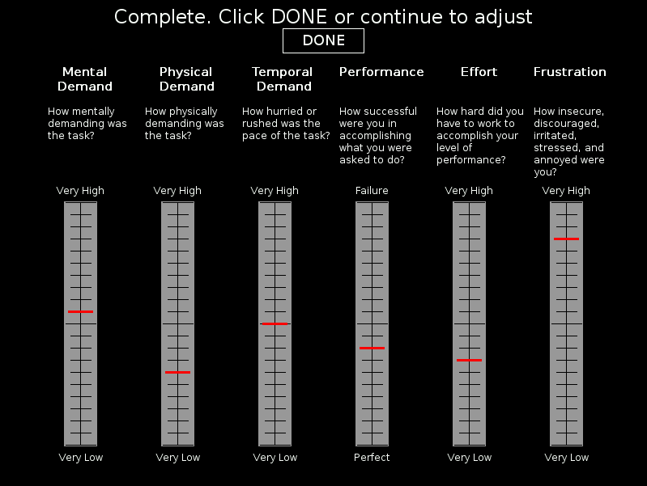

Cognitive load map
About
A cognitive load map annotates a user flow or task sequence with the mental effort required at each step. Annotations typically use a simple scale — high, medium, low — or a numeric load score. Some versions also distinguish between types of load: intrinsic (complexity of the task itself), extraneous (complexity introduced by poor design), and germane (mental effort spent building understanding). The map reveals where friction is cognitive rather than functional — steps that appear complete but that leave users uncertain, where errors in understanding accumulate before they become visible as errors in behavior.
When to use
Use a cognitive load map when evaluating complex flows, multi-step forms, or task sequences where user error or abandonment is occurring but the functional path is technically complete. It is particularly useful in domains with inherent complexity — medical, financial, legal — where simplification must be deliberate rather than assumed.
When not to use
Do not apply cognitive load mapping to simple, low-stakes flows where the effort is obviously low. The method requires either usability testing data or careful task analysis to score load accurately — avoid assigning load scores based on intuition alone.
References
Examples
Click any example to view full size and visit the original source.




